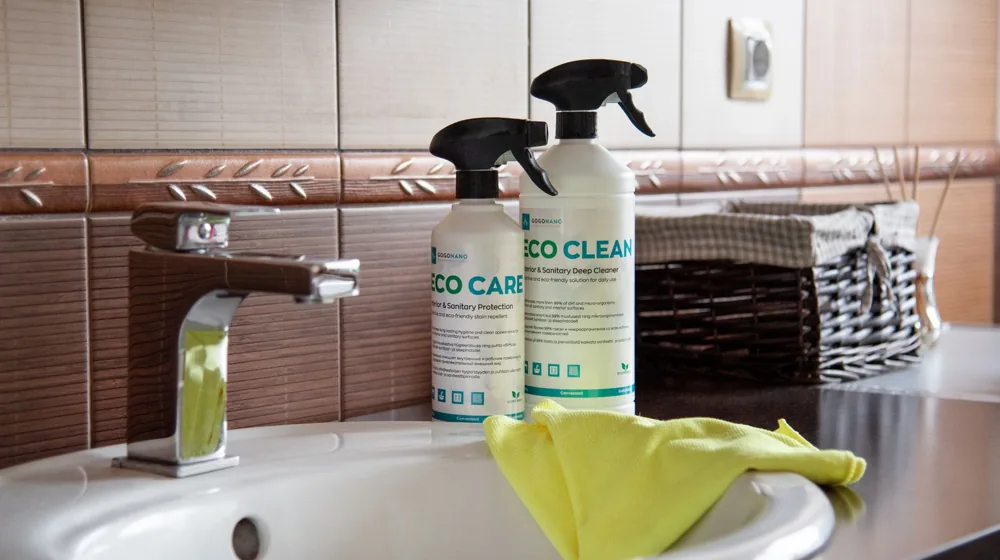

친환경 세제, 이것만 알면 실패 없다! 3가지 핵심 기준 완벽 가이드
사진: GoGoNano Official / Pexels (무료 이미지, 출처 표기)
친환경 세제, 왜 지금 주목해야 할까요?

최근 환경과 건강에 대한 인식이 높아지면서 친환경 세제를 찾는 분들이 많아졌습니다. 일반 세제에 포함될 수 있는 유해 물질이 피부 자극이나 호흡기 문제를 일으킬 수 있다는 우려 때문인데요. 또한, 세척 후 생활하수로 배출되는 성분들이 수질 오염에 영향을 미친다는 점도 중요한 고려 사항입니다.
친환경 세제는 단순히 때를 제거하는 것을 넘어, 사용하는 사람의 건강과 우리가 살아가는 지구 환경까지 생각하는 제품입니다. 올바른 친환경 세제 선택은 작은 습관이지만 지속 가능한 미래를 위한 중요한 실천이 될 수 있습니다.
진짜 친환경 세제 구별법: 공신력 있는 인증 마크부터 확인하세요
친환경이라는 문구만 믿고 제품을 선택하기보다는, 공신력 있는 기관의 인증 마크를 확인하는 것이 가장 중요합니다. 대한민국에서는 환경부 산하 한국환경산업기술원에서 운영하는 '환경표지 인증' 제도가 대표적입니다.
- 환경표지 인증 (환경마크): 제품의 전 과정(생산-소비-폐기)에서 환경오염을 적게 발생시키거나 자원 절약에 기여하는 제품에 부여됩니다. 유해 물질 함유 기준, 생분해도 등 엄격한 심사를 거치므로, 이 마크가 있다면 믿고 선택할 수 있습니다. 2026년 08월 기준으로 세제류에 대한 환경표지 인증 기준은 지속적으로 강화되고 있습니다.
- 해외 인증: 에코서트(Ecocert), USDA 유기농(USDA Organic) 등 해외의 유명 인증 마크도 좋은 기준이 될 수 있습니다.
인증 마크는 제품 포장에서 쉽게 찾아볼 수 있습니다. 친환경 세제 선택의 첫걸음은 바로 이 마크들을 꼼꼼히 살펴보는 것입니다.
성분표 해독 가이드: 피해야 할 유해 성분과 찾아야 할 좋은 성분
인증 마크 외에도 제품의 성분표를 읽는 습관은 매우 중요합니다. 다음 성분들은 환경과 인체에 해로울 수 있으므로 피하는 것이 좋습니다.
- 형광증백제: 옷을 하얗게 보이게 하지만, 피부에 남아 알레르기를 유발할 수 있습니다.
- 인산염 (Phosphate): 수질 오염의 주범으로, 부영양화를 촉진하여 녹조 현상 등을 일으킵니다.
- 파라벤 (Paraben): 방부제로 사용되나, 내분비계 교란 물질로 의심받고 있습니다.
- CMIT/MIT 등 가습기 살균제 성분: 인체에 치명적일 수 있으므로 반드시 피해야 합니다.
- 인공 색소 및 합성 향료: 피부 자극이나 알레르기를 유발할 수 있으며, 환경에 유해할 수 있습니다.
반면, 다음과 같은 성분은 친환경 세제에서 찾아볼 수 있는 좋은 성분입니다.
- 식물성 계면활성제: 팜유, 코코넛 오일 등 식물 유래 성분으로 만든 계면활성제는 생분해도가 높아 환경 부담이 적습니다. 계면활성제는 물과 기름을 섞이게 하여 때를 분리하는 핵심 세척 성분입니다.
- 높은 생분해도: 세제가 사용 후 자연 상태에서 미생물에 의해 얼마나 빨리 분해되는지를 나타내는 지표입니다. 생분해도가 높을수록 하천 오염 부담이 줄어듭니다.
- 베이킹소다, 구연산, 과탄산소다: 천연 성분으로 알려진 이들은 세척력 보강, 살균, 표백 등에 도움을 줍니다.
우리 집에 딱 맞는 친환경 세제 형태는? 장단점 비교
친환경 세제는 액체, 가루, 캡슐, 시트 등 다양한 형태로 출시됩니다. 각 형태별 장단점을 비교하여 우리 집 라이프스타일에 맞는 제품을 선택해보세요.
세탁량이나 오염 정도, 사용하는 세탁기의 종류 등을 고려하여 최적의 형태를 선택하는 것이 중요합니다.
친환경 세제 효과 200% 활용하는 똑똑한 사용법과 주의사항
친환경 세제를 제대로 사용하는 것도 환경 보호에 기여하고 세척력을 높이는 방법입니다.
- 정량 사용하기: 친환경 세제는 적은 양으로도 충분한 세척력을 발휘하도록 설계된 경우가 많습니다. 과도하게 사용하면 잔여물이 남거나 오히려 환경 부담을 늘릴 수 있으니, 제품에 명시된 권장량을 지켜주세요.
- 찬물 세탁 생활화: 대부분의 친환경 세제는 찬물에서도 뛰어난 용해력과 세척력을 보입니다. 온수 사용을 줄이면 에너지를 절약할 수 있어 더욱 친환경적입니다.
- 세탁조 관리: 세탁조 내부에 세제 찌꺼기나 물때가 쌓이면 세균 번식의 원인이 됩니다. 정기적으로 세탁조 클리너를 사용하거나 베이킹소다, 식초 등으로 관리해주면 세척 효과를 유지할 수 있습니다.
- 용기 재활용 및 리필 사용: 다 쓴 세제 용기는 깨끗하게 비워 분리수거하거나, 리필용 제품을 구매하여 플라스틱 사용량을 줄이는 데 동참하세요. 많은 친환경 브랜드에서 리필 스테이션이나 리필 파우치를 제공하고 있습니다.
친환경 세제에 대한 오해와 진실: 자주 묻는 질문
Q1. 친환경 세제는 일반 세제보다 비싼가요?
초기에는 일반 세제보다 다소 비쌀 수 있으나, 최근에는 합리적인 가격대의 다양한 제품이 출시되고 있습니다. 또한, 정량 사용 시 오히려 더 경제적일 수 있습니다.
Q2. 세척력이 약하다는 말이 사실인가요?
과거에는 그런 인식이 있었지만, 기술 발전으로 현재의 친환경 세제는 일반 세제 못지않은 세척력을 자랑합니다. 특히 인증 마크를 받은 제품들은 기본적인 세척력도 함께 검증받은 것입니다. 다만, 특정 오염에는 추가적인 세탁 방법(애벌빨래 등)이 필요할 수 있습니다.
Q3. 모든 친환경 세제가 100% 안전한가요?
친환경 세제는 일반 세제에 비해 유해 성분 함량이 낮거나 자연 유래 성분을 사용하지만, 모든 사람에게 100% 안전하다고 단정할 수는 없습니다. 개인의 피부 민감도나 알레르기 유발 물질에 따라 반응이 다를 수 있으므로, 처음 사용할 때는 소량으로 테스트하거나 성분표를 꼼꼼히 확인하는 것이 좋습니다.
친환경 세제는 단순히 제품을 바꾸는 것을 넘어, 소비 습관과 라이프스타일을 변화시키는 중요한 시작점입니다. 오늘 알려드린 가이드를 바탕으로 우리 가족과 지구 모두에게 건강한 친환경 세제를 현명하게 선택하시길 바랍니다. 정확한 사항은 각 제품의 공식 홈페이지나 환경부 홈페이지에서 다시 확인하시길 권장합니다.
🔗 이 글도 함께 보면 좋아요: 한방 스파 vs 일반 스파, 나에게 맞는 힐링법은? 핵심 차이와 선택 가이드
관련 추천 상품
이 포스팅은 쿠팡 파트너스 활동의 일환으로, 이에 따른 일정액의 수수료를 제공받습니다.